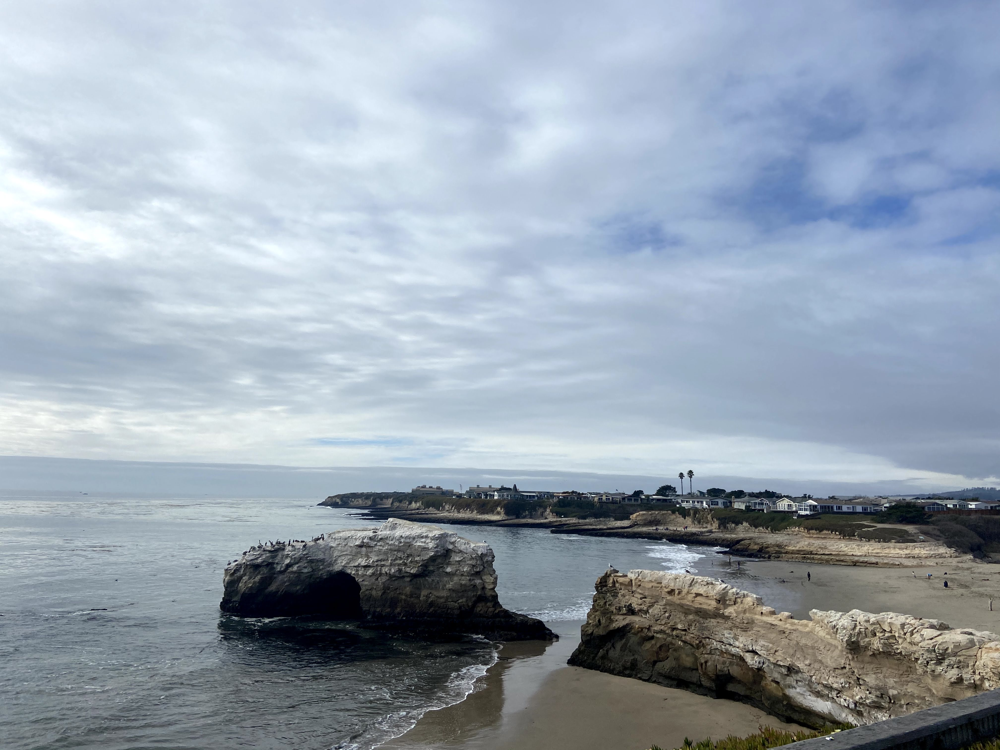
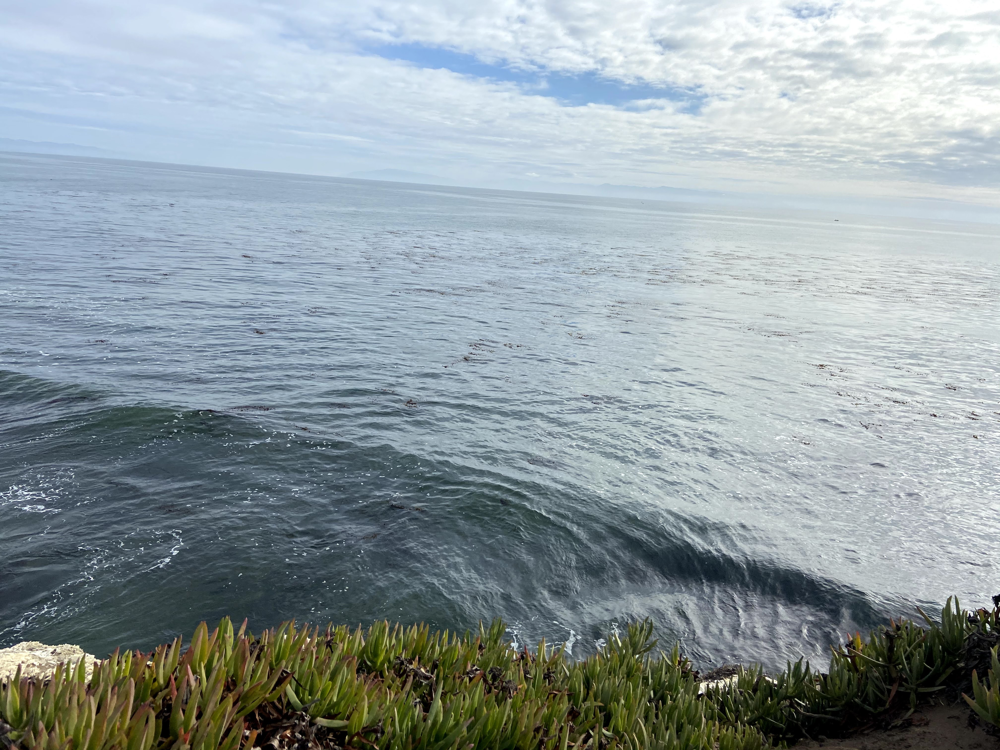
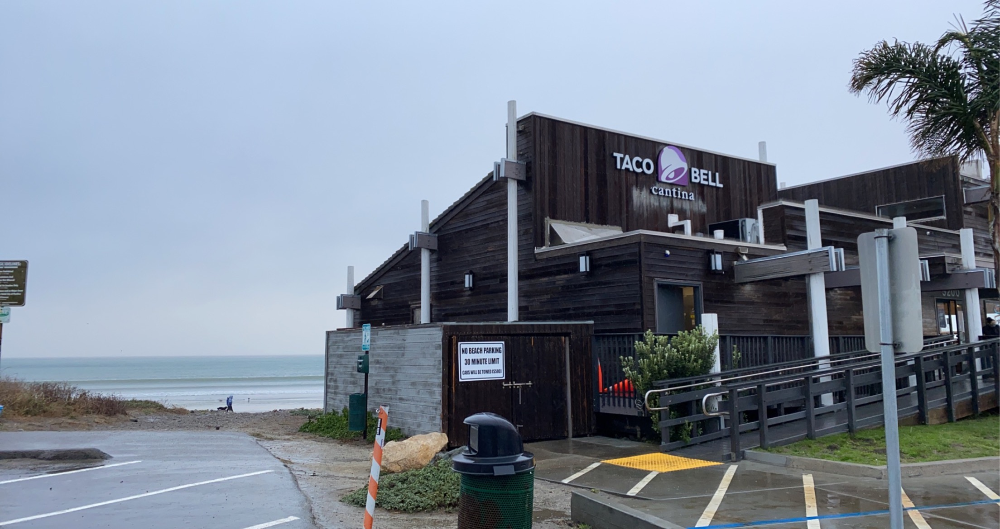

I took this trip with my girlfriend on November 13, 2020. We drove from Reno, NV to Santa Cruz, CA. We took I-80 West for the majority of the trip, going through Sacramento and the East Bay Towns. Being so close to the water, but viewing it from the cliffs was a unique sight for us. And the rainy weather that day only served to enance the experience.
Driving back, through San Fransisco, we got word that Donner Pass, our route home, was snowing heavily and that we required chains. After some quick thinking on our feet, we managed to secure some new chains for the car and we made our way up the mountain. Although we were able to get the chains on the car successfully (and keep them throughout the drive), I highly recommending practicing chain installations at home rather than on a mountain in the freezing cold.

After getting lunch at the Santa Cruz Pier, we drove up the California 1 highway, a first for the both of us in this part of the state, all the way to Pacifica, where I practically forced us to stop by Taco Bell By The Sea. Driving up the 1 was amazing, the highway coming so close to the water. After stopping where I wanted to stop, we drove up to Daly City and went where she wanted to go, a super target with 2 stories and an escalator, which in and of itself is an experience.
